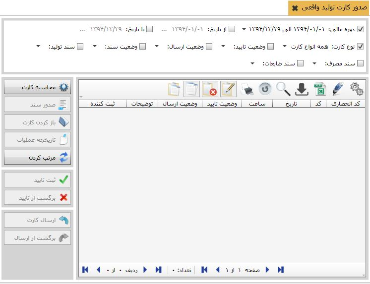
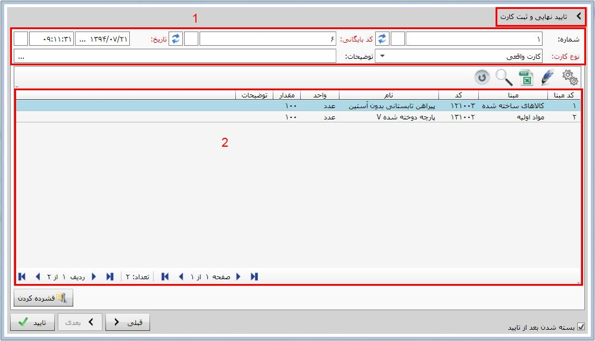
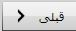
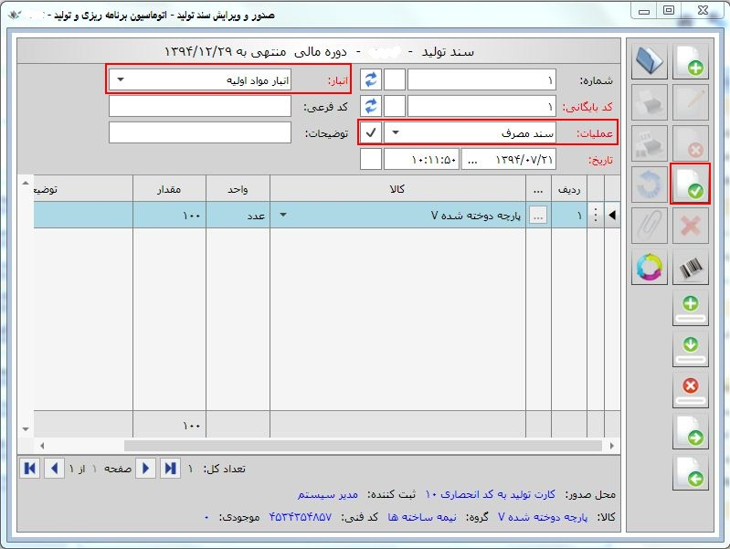
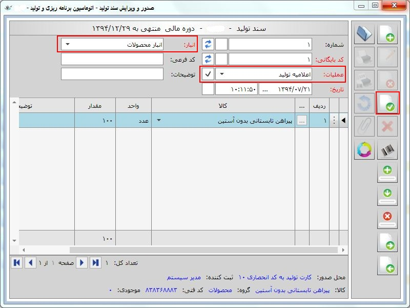
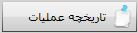

ایجاد ردیف (Ctrl + Plus)
از این گزینه برای اضافه کردن ردیف جدید استفاده می شود
ایجاد ردیف (Ctrl + Plus)
از این گزینه برای اضافه کردن ردیف جدید استفاده می شود
برای صدور کارت تولید واقعی از قسمت عملیات روزانه و بایگانی اسناد، بر روی منوی صدور کارت تولید واقعی کلیک کنید شکل زیر این صفحه را نشان میدهد.
در شکل بالا چون هنوز کارت تولیدی صادر نشده است بسیاری از آیکن ها غیر فعال می باشند.
برای صدور کارت تولید واقعی از منوی سمت چپ بر روی گزینه محاسبه کارت کلیک کنید تا شکل زیر نمایش داده شود.

شکل بالا به دوقسمت تقسم شده است :
قسمت اول که گزینه های زیر در آن قرار دارد :
ایجاد ردیف (Ctrl + Plus)
از این گزینه برای اضافه کردن ردیف جدید استفاده می شود
 کپی ردیف (Ctrl + Shift + Plus):
از این گزینه برای کپی ردیفی که در حالت انتخاب قرار دارد استفاده می شود.
کپی ردیف (Ctrl + Shift + Plus):
از این گزینه برای کپی ردیفی که در حالت انتخاب قرار دارد استفاده می شود.
 حذف ردیف (Ctrl +Minus):
از این گزینه برای حذف ردیف های کارت تولید استفاده می شود.
حذف ردیف (Ctrl +Minus):
از این گزینه برای حذف ردیف های کارت تولید استفاده می شود.
قسمت دوم شامل ردیف های محصول ساخته شده می باشد که پس از پر کردن نام کالا، فرمول و مقدار بر روی دکمه بعدی کلیک کنید. شکل زیر صفحه تائید نهایی و ثبت کارت را نشان می دهد:
در شکل بالا در قسمت شماره یک شماره کارت تولید، نوع کارت، تاریخ و ساعت را می توانید تعیین کنید. و در کادر شماره دو خلاصه کارت تولید اعم از کالای ساخته شده، مواد اولیه، ضایعات تولیدو عوامل موثر در جریان تولید را مشاهده میکنید.
 از دکمه فشرده کردن هنگامی که در کارت تولید (در کادر شماره دو در شکل بالا) در ستون مبنا از یک نوع کالا در چند ردیف مختلف وجود داشته باشد استفاده می شود.
از دکمه فشرده کردن هنگامی که در کارت تولید (در کادر شماره دو در شکل بالا) در ستون مبنا از یک نوع کالا در چند ردیف مختلف وجود داشته باشد استفاده می شود.
 از این دکمه برای برگشت به قسمت قبلی استفاده می شود.
پس از کامل کردن اطلاعات صفحه بر رو دکمه تایید
 کلیک کنید تا کارت تولید صادر شود.شکل زیر صفحه صدور کارت تولید واقعی را پس از ثبت کارت تولید نشان می دهد.
کلیک کنید تا کارت تولید صادر شود.شکل زیر صفحه صدور کارت تولید واقعی را پس از ثبت کارت تولید نشان می دهد.
در شکل بالا در کادر شماره یک شما می توانید بر اساس فیلتر هایی که قرار داده شده است کارت های تولید مورد نظر را پیدا کنید.
در کادر شماره دو لیست کارت های تولید صادر شده را مشاهده می کنید و در کادر شماره سه گزینه های زیر قرار دارد که به توضیح آن ها می پردازیم:
 از این گزینه برای صدور کارت تولید استفاده می شود که در بالا به توضیح آن پرداختیم.
از این گزینه برای صدور کارت تولید استفاده می شود که در بالا به توضیح آن پرداختیم.
پس از صدور کارت تولید نیاز است که اسناد مربوط به کارت تولید شامل اعلامیه تولید، سند مصرف و سند ضایعات صادر شود. پس از کلیک بر روی این گزینه منوی صدور سند باز می شود:

این منو دارای سه گزینه می باشد:
سند مصرف : با انتخاب این گزینه صفحه صدور سند تولید باز می شود که ردیف های سند به صورت اتوماتیک از رو ی مواد اولیه موجود در کارت تولید پر شده است.و تنها با انتخاب عملیات سند مصرف در قسمت عملیات و انباری که مواد اولیه از آن خارج شده اند می توانید سند را ثبت کنید.شکل زیر این صفحه را نشان می دهد:
سند تولید: با انتخاب این گزینه صفحه صدور سند تولید باز می شود که ردیف های سند به صورت اتوماتیک از رو ی کالای ساخته شده موجود در کارت تولید پر شده است.و تنها با انتخاب عملیات اعلامیه تولید در قسمت عملیات و انباری که کالای ساخته شده به آن وارد می شود می توانید سند را ثبت کنید. شکل زیر این صفحه را نشان می دهد :

 سند ضایعات :
با انتخاب این گزینه صفحه صدور سند تولید باز می شود که ردیف های سند به صورت اتوماتیک از رو ی ضایعات موجود در کارت تولید پر شده است.و تنها با انتخاب عملیات سند ضایعات در قسمت عملیات و انباری که ضایعات به وجود آمده به آن وارد می شود می توانید سند را ثبت کنید. شکل زیر این صفحه را نشان می دهد :
سند ضایعات :
با انتخاب این گزینه صفحه صدور سند تولید باز می شود که ردیف های سند به صورت اتوماتیک از رو ی ضایعات موجود در کارت تولید پر شده است.و تنها با انتخاب عملیات سند ضایعات در قسمت عملیات و انباری که ضایعات به وجود آمده به آن وارد می شود می توانید سند را ثبت کنید. شکل زیر این صفحه را نشان می دهد :

 با کلیک بر روی این گزینه صفحه مشاهده و ویرایش کارت تولید باز می شود که دارای چهار سر برگ می باشد. که می توان در هر کدام از این سربرگ ها ردیف های موجود را حذف و یا ویرایش نمود. شکل زیر این صفحه را نشان می دهد :
با کلیک بر روی این گزینه صفحه مشاهده و ویرایش کارت تولید باز می شود که دارای چهار سر برگ می باشد. که می توان در هر کدام از این سربرگ ها ردیف های موجود را حذف و یا ویرایش نمود. شکل زیر این صفحه را نشان می دهد :
 با کلیک بر روی این گزینه صفحه تاریخچه عملیات باز می شود که می توانید اطلاعات در مورد تاریخ ایجاد و ویرایش کات تولید را مشاهده کنید.
این آیکن این امکان را میسر میسازد که شما شمارهکارت های تولید را به ترتیب تاریخ مرتب کنید . بعد از کلیک بر روی این آیکن پنجره ای ظاهر می شود که محدوده تاریخی را که می خواهید مرتب کنید از شما سوال می کند (اسناد در محدوده تاریخی نباید در حالت تایید شده باشند.)

با تایید پنجره فوق پنجره دیگری مانند پنجره زیر نمایش داده می شود:

با تنظیم بازه زمانی مورد نظرتان برای مرتب کردن اسناد و انتخاب گزینه تایید، اسناد در بازه زمانی انتخاب شده بر حسب نوع عملیات و تاریخ مرتب می شوند.
 شما می توانید با آیکن « ثبت تایید» کارت های تولید صادر شده را تایید کنید. سندی که تایید می شود قابلیت حذف یا ویرایش را ندارد.
شما می توانید با آیکن « ثبت تایید» کارت های تولید صادر شده را تایید کنید. سندی که تایید می شود قابلیت حذف یا ویرایش را ندارد.
برای ایجاد تغییر در کارت تولید می توانید با کلیک بر روی گزینه « برگشت از تایید» آن را از حالت تایید خارج کنید.